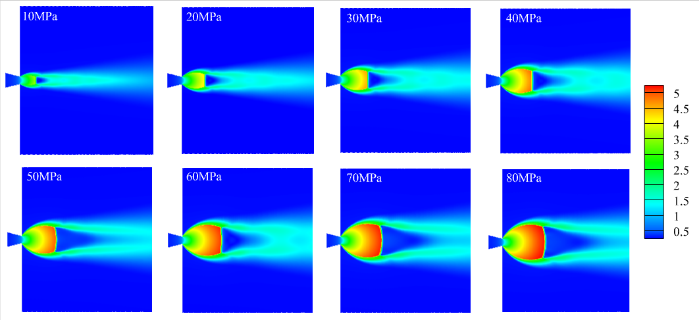
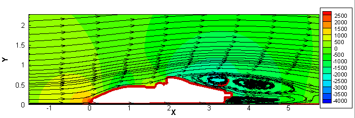
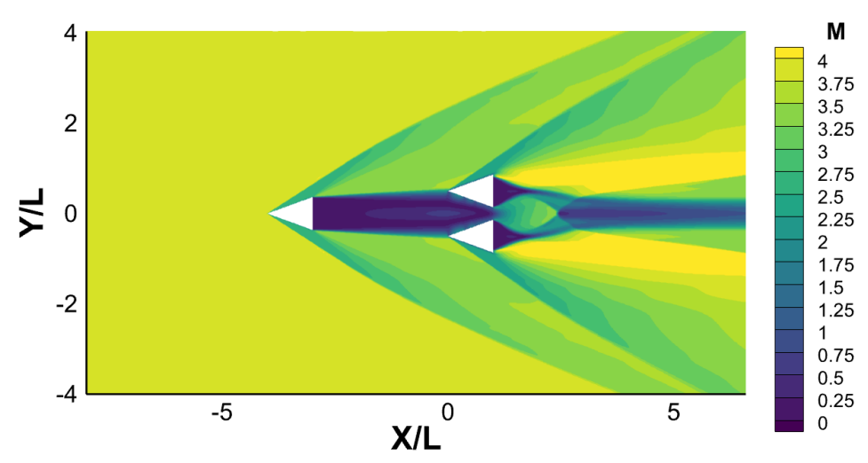
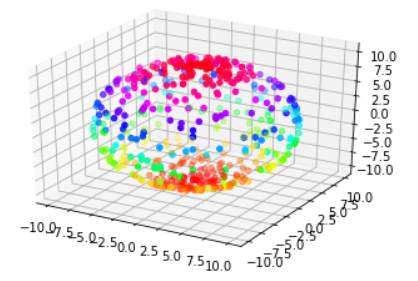
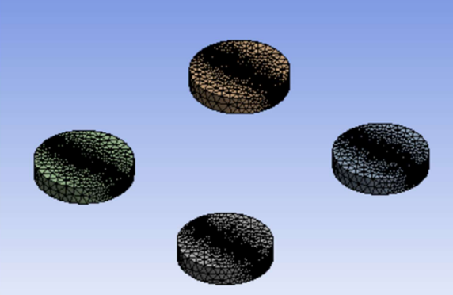
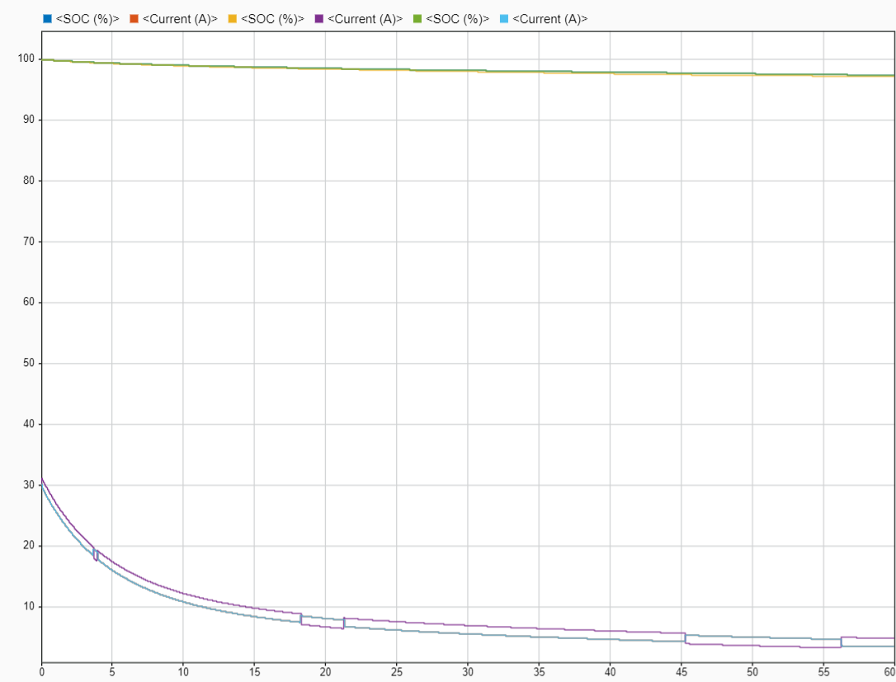

This project was the part of my undergraduate thesis at the CFD Laboratory at Politecnico di Milano, under the supervision of Prof. Riccardo Mereu, Associate Professor at the Department of Energy. In this thesis, I studied more about highly under-expanded supersonic Jets and did CFD simulations using ANSYS Fluent with circular and rectangular shaped nozzles and validated those with both theoretical and experimental results.

This project is mainly focuse on analyzing the lift and drag coefficient of the rear car when two formula cars are racing back to back at different distances. This project was guided by Dr. Pardha Saradhi, assistant Professorat BITS Pilani Hyderabad Campus. All the results were post processed using Tecplot and Matlab. Soon this project will also get submitted in a Journal as the manuscrip is ready.

When a supersonic shock is created by a sharp wedge, how does it interact with the shco waves created by the rear wedges, in this project we studied about shock-shock interactions of sharp wedges arranged in different patterns. We are a team of 4 members and started this as a course project for the CFD course but finally becuase of the problem statement and the results, under the guidance of Dr. K. Supradeepan & Dr.K. R. C. Murthy we are writing a manuscript to submit for a Journal.

This was one of the first projects which introduced CFD to me. In this project I studied Studied how Immerse Boundary Projection Method (IBPM) differs from methods used previously for similar problems. Evolved the open source C++ code favoured to the problem simulating which is used in PetIBM and PetSc solvers. Simulated flow over a 2D stationary circular cylinder also conducted a grid independence study and validated the results and also created a 3D sphere for simulating the flow over it using python.

In this project I learned how to use Text User Interface (TUIs) and Moving Reference Frame (MRF) models in ANSYS FLuent. The aim of this project is to calculate the lift and drag coefficients of the quadcopter at different heights from the ground. This project was guided by Dr. K. Supradeepan where he provided all the resources for the geometry. And the meshing around the quadcopter multi-domain mesh and the mesh around blades is refined till the value of Y+ value is 1.

State of Charge (SOC) and State of Health (SOH) are two most important things we need to monitor while using Battery Management System (BMS).As a part of the Work Integrated Learning programme, under the guidance of Dr. Madhuri Bayya, in MATLAB Simulink a BMS Circuit is created and SOC and SOH at different input Voltage value are caluclated, and also checked if this BMS is safe to use in a real life car battery or a phone battery